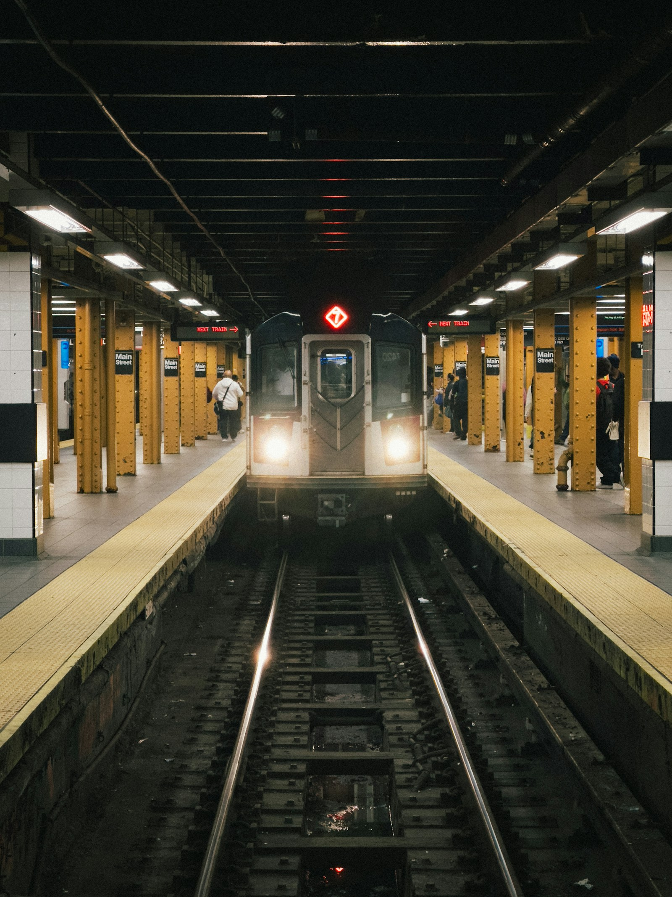

Build familiarity through signs, stops, and asking for help.
Responsibilities
Rider and caregiver flows
Interface and visual identity
Interactive prototypes and motion
Skills
Problem framing · Information architecture · User flows · UI design · Visual storytelling · Interaction design · Motion prototyping
Tools
Figma for the source wireframes. HTML, CSS and JavaScript for the interactive prototype. Python and FFmpeg for feature films. Code-rendered product visuals and credited NYC photography.
A concept-level assessment of what Smallstop can offer and what still needs to be resolved.
Strengths
One familiar route connects practice, guidance, and reassurance.
A consistent companion keeps the experience recognizable.
Weaknesses
Manual stop counting can drift.
The concept has not been validated with children or against real transit conditions.
Opportunities
Explore caregiver-led rehearsal, accessible sign recognition, and a shared vocabulary for asking for help.
Threats
Service changes, unreliable connectivity, and misplaced trust in a concept could undermine guidance.
Real-world release needs operational validation.
Competitive analysis
Directions are well served. Learning the journey is the focus here.
A focused review of published product guidance informed this comparison. Smallstop’s distinction is a proposed learning experience for children and caregivers, not a claim that other tools lack every related feature.
Citymapper
Journey guidance
Relevant steps at the right time.
Design cue: reveal the next action.
Journey steps surfaced at the relevant moment
Trip assistance helps riders follow a chosen route
Design lesson: avoid presenting every instruction at once
Transit
Step-by-step travel
Progress through the trip with GO.
Design cue: make progress visible.
GO provides step-by-step trip guidance
Nearby options and real-time information support travel decisions
Design lesson: make trip progress easy to follow
MTA app
Trip planning
A clear plan for getting there.
Design cue: keep the route legible.
Trip planning for the transit network
A clear route plan supports preparation
Design lesson: keep station and direction information legible
s↗
Smallstop
Learning a familiar route
Practice, ride guidance, and reassurance.
Proposed focus: confidence through repetition.
Practice signs before a familiar ride
Caregiver-selected routes and a practice-first choice
Saved guidance, help cues, and learning stamps
The opportunity
Bring sign practice, caregiver decisions, and in-ride reassurance into one learning experience. This is a concept direction, not evidence that competitors lack these features.
Empathy map
Maya’s first familiar ride. Illustrative scenario statements, not participant quotations.
“ Says
I want to try the next step myself.
Is this the right platform?
? Thinks
Does this sign match what we practiced?
What happens if I miss my stop?
Maya, 11
Learning rider
↗ Does
Matches signs, counts stops, and checks with a caregiver.
Looks for a familiar landmark.
♡ Feels
Proud to lead a small part of the trip.
Unsure when the train pauses or the plan changes.
− Pains
Too many signs, unfamiliar names, and instructions that assume experience.
The need underneath
Let me try. Help me know what comes next.
+ Gains
A recognizable next step, permission to ask for help, and confidence built through practice.
User journey
An anticipated emotional journey, to validate in supervised testing. The curve is illustrative, not measured data.
Before the rideDuring the rideAfter the ride
Curious
Plan together
Choose the school route with a caregiver.
A shared route makes the goal concrete.
Unsure
Practice
Try a platform-sign question.
Explain the answer and allow another try.
Reassured
Start the ride
Recognize the route and next stop.
Bring one instruction into focus.
Worried
A train pause
Open help when something feels unfamiliar.
Offer calm guidance and a return path.
Proud
Arrive
Recognize the destination and reflect together.
Connect the stamp to what was learned.
● Ready / reassured● Unsure / learning● Needs support
User personas
Four provisional profiles for the concept. Names, ages, and situations are illustrative; they are not research participants or validated findings.
Four illustrative Smallstop personas and their needs
Profile
The learning rider
Maya, 11
Practicing the school route
The caregiver
Priya, 38
Building a shared travel plan
The returning rider
Leo, 13
A familiar ride, an unfamiliar change
The shared caregiver
Rosa, 64
Keeping the same plan across adults
Daily life
Travels to school with a caregiver and recognizes familiar stations.
Is beginning to take a more active role in the journey.
Coordinates school travel around a busy routine.
Practices familiar trips with Maya and decides when to introduce more independence.
Knows the school route and usually travels with a sibling.
Uses familiar landmarks to keep track.
Helps with school pickups on some days and coordinates the route with the child’s parent.
Motivations
Wants to choose the right platform, recognize the stop.
Feel trusted to handle small parts of the trip.
Wants Maya to understand the journey, explain the next step.
Feel comfortable asking for help.
Wants to take responsibility for the journey without repeating lessons already understood.
Wants a clear shared plan and to know what the child has practiced before setting off.
Concerns
Mixing up directions.
Missing a stop, or not knowing what to do when a train pauses between stations.
A route changing.
Messages not getting through underground.
Confidence growing faster than practical readiness.
A skipped stop or changed platform can make a familiar trip feel unfamiliar again.
Small text.
Unfamiliar controls.
Assuming that a message has arrived underground.
Pain points
Lots of signs at once.
Unfamiliar station names.
Instructions that assume the rider already knows the system.
It can be difficult to judge readiness or rehearse unexpected moments without making the journey feel intimidating.
Instructions that restart from the beginning, unclear recovery steps.
Rewards that feel too young.
Plans spread across conversations and no simple distinction between saved guidance and live information.
Design response
Make the next step recognizable, give useful feedback.
Keep help easy to find.
Support route approval, a practice-first choice.
Clear expectations about offline guidance.
Keep routine guidance brief, make changes explicit.
Offer a clear way to ask a trusted adult for help.
Use legible labels, an explicit practice plan, and visible message status.
Explore shared access with caregiver consent.
The learning rider
Maya, 11
Practicing the school route
Daily life
Travels to school with a caregiver and recognizes familiar stations.
Is beginning to take a more active role in the journey.
Motivations
Wants to choose the right platform, recognize the stop.
Feel trusted to handle small parts of the trip.
Concerns
Mixing up directions.
Missing a stop, or not knowing what to do when a train pauses between stations.
Pain points
Lots of signs at once.
Unfamiliar station names.
Instructions that assume the rider already knows the system.
What the design needs to do
Make the next step recognizable, give useful feedback, and keep help easy to find.
The caregiver
Priya, 38
Building a shared travel plan
Daily life
Coordinates school travel around a busy routine.
Practices familiar trips with Maya and decides when to introduce more independence.
Motivations
Wants Maya to understand the journey, explain the next step.
Feel comfortable asking for help.
Concerns
A route changing.
Messages not getting through underground.
Confidence growing faster than practical readiness.
Pain points
It can be difficult to judge readiness or rehearse unexpected moments without making the journey feel intimidating.
What the design needs to do
Support route approval, a practice-first choice, and clear expectations about offline guidance.
The returning rider
Leo, 13
A familiar ride, an unfamiliar change
Daily life
Knows the school route and usually travels with a sibling.
Uses familiar landmarks to keep track.
Motivations
Wants to take responsibility for the journey without repeating lessons already understood.
Concerns
A skipped stop or changed platform can make a familiar trip feel unfamiliar again.
Pain points
Instructions that restart from the beginning, unclear recovery steps.
Rewards that feel too young.
What the design needs to do
Keep routine guidance brief, make changes explicit, and offer a clear way to ask a trusted adult for help.
The shared caregiver
Rosa, 64
Keeping the same plan across adults
Daily life
Helps with school pickups on some days and coordinates the route with the child’s parent.
Motivations
Wants a clear shared plan and to know what the child has practiced before setting off.
Concerns
Small text.
Unfamiliar controls.
Assuming that a message has arrived underground.
Pain points
Plans spread across conversations and no simple distinction between saved guidance and live information.
What the design needs to do
Use legible labels, an explicit practice plan, and visible message status. Explore shared access with caregiver consent.
Business plan
A big part of the business plan was to ensure costs were covered without making it a burden on users. The proposed model combines voluntary add-ons and affiliate partnerships, reducing reliance on direct user payments while supporting basic app functionality and scalability.
The idea Keep the everyday journey free. Let optional extras and caregiver-facing partnerships help fund the service.
Key partners
Transit educators and family organizations
Schools and community programs
Accessibility and child-development specialists
Family-friendly venues and affiliate partners
Key activities
Develop and maintain the app
Create route and sign-practice content
Test comprehension with children and caregivers
Review partner offers and maintain guidance
Key resources
Product and engineering team
Reliable route information
Accessible learning content
Caregiver trust and research insights
Value proposition
Help children learn one familiar route at a time
Connect preparation, guidance, and reassurance
Keep essential practice and ride features free
Build confidence through repetition, with a caregiver setting the pace
Customer relationships
Caregiver-led setup and route approval
Shared practice and progress
Clear help and support
Optional offers in the caregiver experience
Channels
Mobile app
School and community introductions
Parent networks and word of mouth
Partner-led family learning programs
Customer segments
Children learning a familiar subway route
Returning riders building independence
Parents coordinating school travel
Grandparents and other trusted caregivers
Cost structure
App development, hosting, and maintenance
Route information and content updates
User research and accessibility testing
Customer support and partnership management
Revenue streams
Voluntary add-ons: extra passport themes and printable activity packs
Affiliate commissions on optional caregiver-selected family experiences
Potential school or community program partnerships
Core route practice, ride guidance, and help remain free
Proposed model: partner interest, operating costs, and willingness to pay still need validation. Affiliate offers would be clearly disclosed and kept separate from children’s route guidance.

Recognize the place.From the platform to the screen
Less to read. More to recognize.
Familiar station names
One direction at a time
A visible way back to help
● ━━━ ● ━━━ ● ↗
Structure / Information architecture
My Ride, Practice, and Passport anchor the navigation. Help stays within reach, with a direct return to the current trip.
smallstop ↗
My Ride
Saved route
Start → Stops → Arrival
Help ↔ Return to ride
Practice
Route Quest
Signs → Choice → Feedback
Repeat and build familiarity
Passport
Station stamps
Journeys → Achievements
See progress over time
Caregiver flow: route request → approve / practice first / not this time
2 × 2 prioritization
A qualitative planning exercise: balance learning value with implementation effort.
Public leaderboards · Social feeds · Citywide challenges
Low-fidelity wireframes
A schematic reconstruction of the core flow, showing hierarchy before visual styling.
Prepare
smallstop
Your familiar ride
Home → School
Choose a route with a caregiver.
Practice first
Practice
smallstop
Which way?
Uptown / Downtown
Recognize one sign at a time.
Check my answer
Ride
smallstop
Your next stop
3 stops left
One route. One next action.
Doors opened
Recover
smallstop
Need a moment?
Breathe with Dot
Return to the ride or ask for help.
Back to my ride
User research & testing
Proposed study: recruit children and caregivers with different levels of transit familiarity. No sessions or results are claimed here.
Learn about the routine
Interview caregiver–child pairs about a familiar route, how they practice, and how responsibilities change.
Observe comprehension
In a supervised simulation, ask participants to match signs, track a stop, and explain the next step aloud.
Explore recovery
Simulate a paused train and unavailable connectivity. Check whether help and message status are understood.
Include different needs
Recruit across reading confidence, device familiarity, and accessibility needs. Obtain caregiver consent and child assent.
Testing synthesis & key learnings
A framework for recording future sessions. Each question connects an observation to a possible design change.
Question
Evidence to collect
Decision it informs
Can they read the sign?
Choice, explanation, hesitation, and help needed.
Wording, sign scale, and practice feedback.
Can they recover?
Help discovery and successful return to the current trip.
Help placement and saved ride state.
Do caregivers understand readiness?
How they explain approve versus practice first.
Approval language and shared preparation.
Does the reward support learning?
Whether riders can explain what the stamp represents.
Keep rewards tied to familiarity, not speed.
UI problems → design responses
Decisions explored in the prototype, ready to test with real users.
Too much to scan → one next step
A prominent stop count and a short route strip bring the current action forward.
An error feels final → useful feedback
Practice explains the choice and allows another attempt without losing progress.
Help interrupts the trip → a return path
The help flow preserves ride progress and provides a clear way back.
Approval feels binary → practice first
Caregivers can choose a shared rehearsal instead of only yes or no.
Design principles
Reading a platform sign, choosing the right direction, noticing your stop: a familiar trip is a sequence of small decisions. The design breaks that sequence into things a child can learn, practice, and recognize.
Before the ride
Make the unfamiliar feel familiar.
Practice the exact signs and decisions from a route chosen with a grown-up.
On the way
One clear thing to do next.
Show the next step and the stops remaining, without a whole network competing for attention.
When plans change
Reassurance within reach.
Keep a consistent help button and plain-language guidance close at hand.
Brand positioning
A patient companion for learning the city, with a caregiver setting the pace.
Personality
Warm, clear, and encouraging. Dot offers reassurance without pretending to replace a trusted adult.
Voice
Short directions and specific feedback. Explain the next action without pressure or competition.
Visual language
Warm cream, sage, blush, readable type, and recognizable signs. Color reinforces words and symbols.
Experience promise
Practice together. Follow a familiar route. Know where to turn when the trip feels unfamiliar.
Brand system · A familiar look
Built from the city. Softened for its smallest riders.
Transit lettering, route colors, ticket edges, and passport stamps create a familiar visual language. Warm paper and generous spacing balance the bold signs and confident type.
The typeface · Saans
Big city. Small steps.
Clear directions. A friendly voice. Room to breathe.
A little warmth underground
Soft ink
Sage
Blush
Butter
Cream
Color supports the words. It never replaces them.
Microinteractions · Try the prototype
Small details. Real feedback.
Start a ride and tap when the doors open. Try a practice question, or take a moment with Dot. This interactive adaptation explores the Figma flow in Smallstop’s new visual identity.
Concept demo · no live transit data or messages
Go on, tap around. Dot’s here.
Takeaways & next validation
The strongest design direction is clarity before rewards. The next step is to test whether that clarity holds up across different riders and unexpected moments.
Recognition
Can a rider choose the right direction?
Compare practice choices with a supervised sign-reading task. Note confusion, explanations needed, and successful recognition.
Recovery
Can they find help and return?
Use a simulated stopped-train scenario. Observe whether the next action is understood and the ride state remains clear.
Shared readiness
Does the plan make sense to both people?
Walk through route approval with caregivers. Check expectations about practice, connectivity, and what the app can actually do.
Reflection
Independence, one small step at a time.
Smallstop brings learning, riding, and reassurance into one familiar system. The design makes space for confidence to grow through repetition, with a grown-up setting the route and the pace.
This is a design concept developed from the Ride Ready wireframes. The next step is to test sign recognition, reading load, and recovery flows with children and caregivers, then validate the offline and transit-data behavior before a real-world pilot.